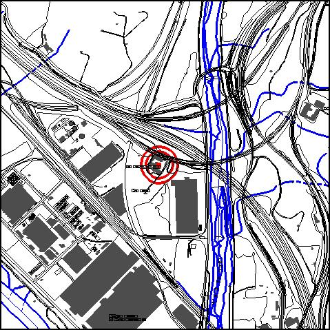
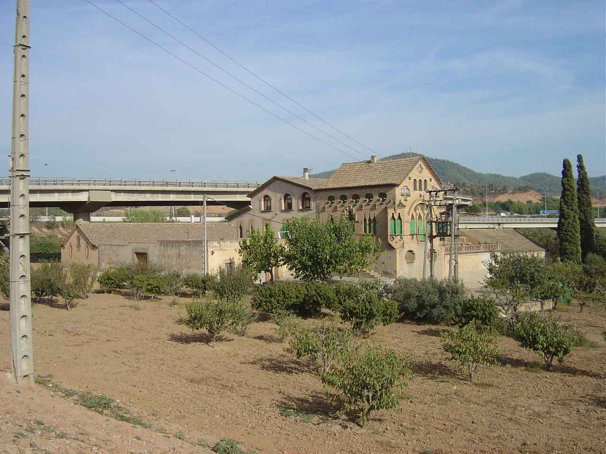

|
 |
 |
Nom de l’element: Can Pedrerol de Baix
Clau d’identificació: A.04
Nucli o indret: Pol. Ind. Sant Vicenç.
UTM: X= 416.014, Y=4.588.983, 46,50m s.n.m..
1.1. Època de construcció i tipologia:
Masia del segle XVII (cos principal del 1640), ampliada i redecorada al 1900-1902, amb elements d’estil modernista a la façana. A l’esquerra de la masia hi ha un celler amb arcades parabòliques de pedra. Destaca el treball del totxo i de les ceràmiques. La coberta de teula àrab té uns faldons laterals. A la zona on està la masia s’hi van trobar restes d’un taller romà d’àmfores d’uns 2000 anys d’antiguitat, que utilitzaven per transportar vi pel riu. Hi havia hagut una vila romana dedicada a l’explotació agrícola i a l’exportació de cereals, oli i vi. En aquesta vila hi havia un forn d’obra, on es coïen els pesos, les llumeneres i les àmfores, les quals es marcaven amb lletres, senyal que ha permès identificar-les. Una àmfora sencer decora l’entrada de la masia, i al jardí d’aquesta es poden observar els basaments de dues columnes desenterrades a la finca.
1.2. Estat de conservació:
Molt bo per tots els elements que constitueixen la masia.
1.3. Ús actual:
Habitatge i agrícola.
1.4. Accés:
Accés des de la carretera B-225, agafant el trencall pel c. Metal·lúrgia i finalment, un camí de terra.
Patrimoni històric local.
Masia del segle XVII, amb elements modernistes. En aquesta zona hi havia hagut una vila romana dedicada a l’explotació agrícola i a l’exportació de cereals, vi i oli.
3.1. Usos admesos:
Unihabitatge, residencial, hoteler (excepte aparthotel; i amb un màxim de 30 places), oficines i serveis, educatiu, recreatiu cultural i social, recreatiu de restauració, esportiu.
3.2. Condicions d’ordenació: Segons Pla Especial a redactar.
3.3. Accés i serveis:
Accés des de la carretera B-225, agafant el trencall pel c. Metal·lúrgia i finalment, un camí de terra.
BCIL (Bé Cultural d’Interès Local)